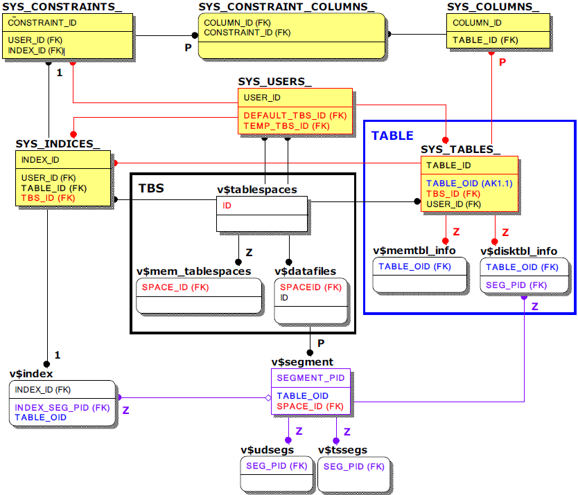

테이블스페이스, 테이블, 컬럼, 인덱스, 제약조건 관련 주요 메타테이블 및 성능뷰
알티베이스는 hybrid DBMS 특성상 테이블스페이스, 테이블에 대한 정보를 메모리 또는 디스크에 따라 별도(TBS, TABLE 박스 참조)로 확인이 가능하게끔 되어있으며 세그먼트의 경우는 v$segment와 관계(보라색)된 각각의 성능뷰를 통해 상세한 자원 사용 현황을 확인할 수 있다.
하지만, 인덱스의 경우 현재로써 메모리 인덱스 크기 측정을 위한 메타테이블이나 성능뷰가 제공되지 않는 관계로 테이블 전체 레코드 수에 하나의 레코드에 대한 메모리 인덱스 크기인 16byte를 곱하는 것으로 대체하여야 한다.
디스크 인덱스는 v$index를 참조, 해당 세그먼트를 통하여 실시간 크기 측정이 가능하다.
테이블스페이스, 테이블, 컬럼, 인덱스, 제약조건 관련 조인쿼리 시 참고할 주요 키 컬럼만 표기한 메타테이블 및 성능뷰의 관계는 아래와 같다.

특이사항으로는 주요 메타테이블인 SYS_TABLE_과 다른 메타테이블 간의 조인 시는 조인컬럼으로 TABLE_ID를 사용하고 성능뷰와의 조인 시는 대체 키인 TABLE_OID 컬럼(파란색)을 사용한다는 것이다.
참고로 표기는 되지 않았지만 SYS_USERS_, SYS_TABLES_을 제외한 모든 메타테이블은 쿼리 편의를 고려하여 USER_ID와 TABLE_ID 컬럼이 모두 존재한다. 성능뷰 v$segment와 v$index 역시 테이블별 합산을 고려하여 TABLE_OID 컬럼이 존재한다.
주요 메타테이블
- SYS_COLUMNS_
모든 테이블의 컬럼 정보가 저장된 메타테이블로 컬럼 이름(COLUMN_NAME)은 물론 데이터 타입(DATA_TYPE), 컬럼 순서(COLUMN_ORDER)와 같은 상세한 정보를 확인할 수 있다.
- SYS_CONSTRAINTS_
테이블의 제약조건 정보를 저장한 메타테이블로 제약조건유형(CONSTRAINT_TYPE)을 확인할 수 있으며 PK, FK, UK와 같은 인덱스 생성을 해야 하는 제약조건의 경우 관련 인덱스 번호(INDEX_ID)를 확인할 수 있다. 또한, FK의 경우 참조테이블(REFERENCED_TABLE_ID)도 확인할 수 있다.
- SYS_CONSTRAINT_COLUMNS
제약조건의 대상이 되는 컬럼의 컬럼 번호(COLUMN_ID)를 확인할 수 있는 메타테이블로 관련 제약조건번호(CONSTRAINT_ID)와 함께 대응되어 있다.
- SYS_INDICES_
모든 인덱스 정보가 저장된 메타테이블로 인덱스 이름(INDEX_NAME)은 물론 테이블스페이스번호(TBS_ID), 인덱스유형(INDEX_TYPE), 구성컬럼개수(COLUMN_CNT)와 같은 상세한 정보를 확인할 수 있다.
주요 성능뷰
- v$tablespaces
모든 테이블스페이스 정보를 나타내는 성능뷰로 테이블스페이스 관련 모니터링 시 기본적으로 활용된다.
- v$mem_tablespaces
메모리 테이블스페이스에 대해서만 상세한 정보를 나타내는 성능뷰로 메모리 DB 운영을 위해 실제로 사용하는 물리적 메모리 크기를 구할 수 있다.
- v$datafiles
디스크 테이블스페이스를 구성하는 데이터 파일의 상세정보를 나타내는 성능뷰로 물리적인 데이터 파일의 경로, 상태 및 크기를 확인 수 있다.
- v$segment
디스크 테이블의 세그먼트 정보를 나타내는 성능뷰로 디스크 테이블, 디스크 인덱스, 언두 테이블스페이스, 임시 테이블스페이스와 같은 디스크 DB 관련 객체의 정확한 크기를 구할 수 있다.
- v$memtbl_info
메모리 테이블에 대해서만 상세한 정보를 나타내는 성능뷰로 메모리 테이블 별 순수 데이터의 크기 및 합계를 구할 수 있다.
- v$disktbl_info
디스크 테이블에 대해서만 상세한 정보를 나타내는 성능뷰로 해당 세그먼트(SEG_PID)를 알 수 있어 디스크 테이블 별 순수 데이터의 크기 및 합계를 구할 수 있다.
- v$index
모든 인덱스에 대한 간략한 정보를 나타내는 성능뷰로 디스크 인덱스의 경우 해당 세그먼트(INDEX_SEG_PID)를 알 수 있어 디스크 인덱스의 크기를 구할 수 있다.
{kind=link}